El Tarot de Marsella tiene 78 cartas. No hace falta saberlas de memoria para venir: alcanza con entender cómo está armado el mazo. Lo demás se aprende tirando.
Los arcanos mayores
Van del Loco, que no tiene número, al Mundo (XXI). Cada uno tiene nombre e imagen propia: el Mago, la Papisa, la Emperatriz, la Torre, la Luna… Hablan de los grandes temas de una situación. Cuando aparecen en una tirada, marcan lo importante.
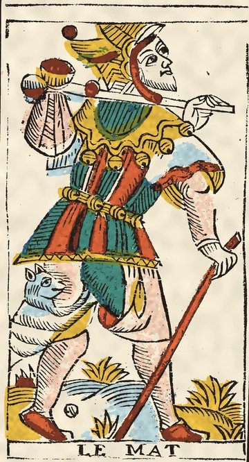
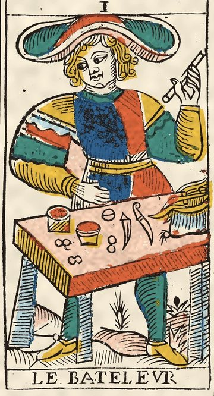
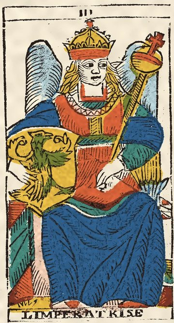
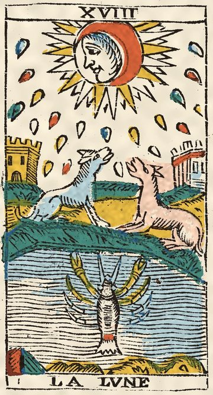
del 0 al XXI, cada una con su nombre
Los arcanos menores
Son cuatro palos de 14 cartas cada uno: del As al Diez, y cuatro figuras, que son la Sota, el Caballero, la Reina y el Rey. Hablan de lo cotidiano, de cómo se mueve la situación en lo concreto.
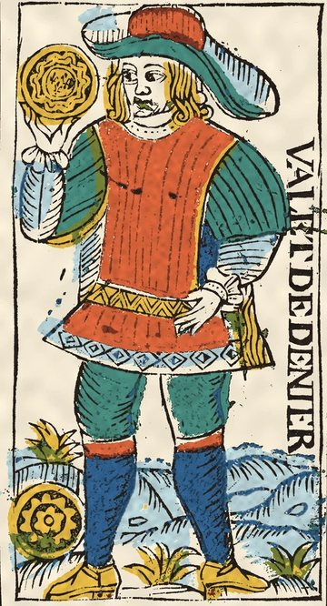
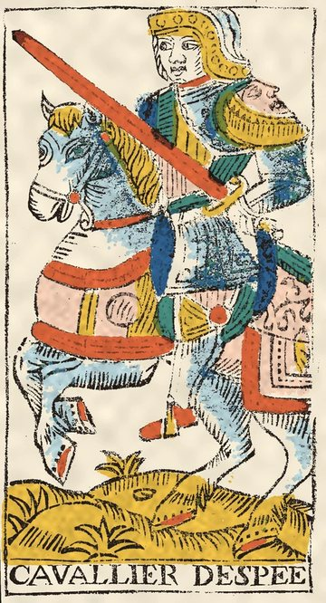
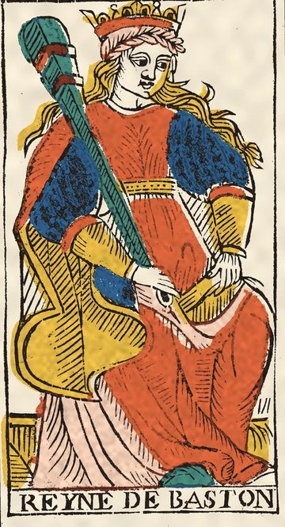
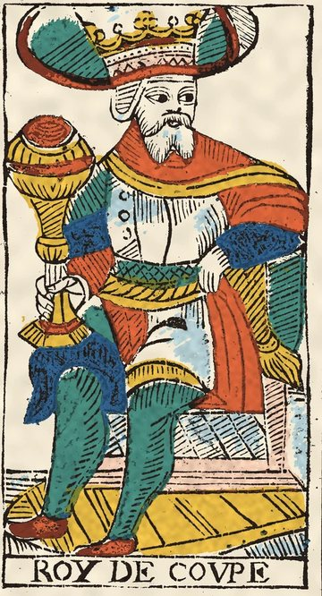
En el Marsella, los numerales no tienen escenas: se leen por el palo y el número.
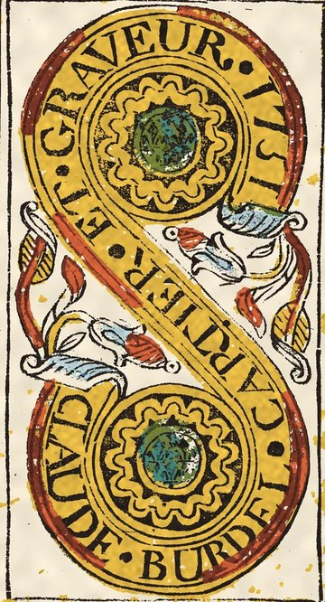
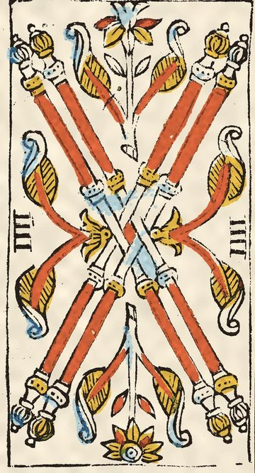
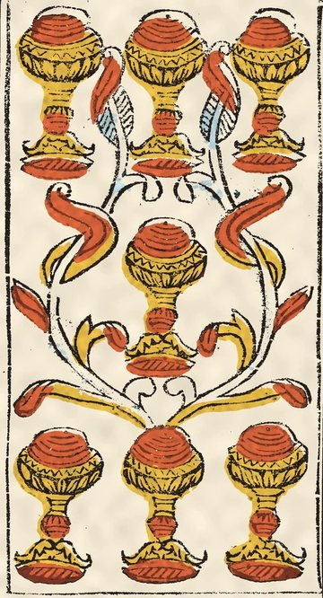
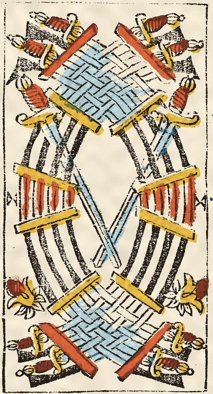
Los cuatro palos
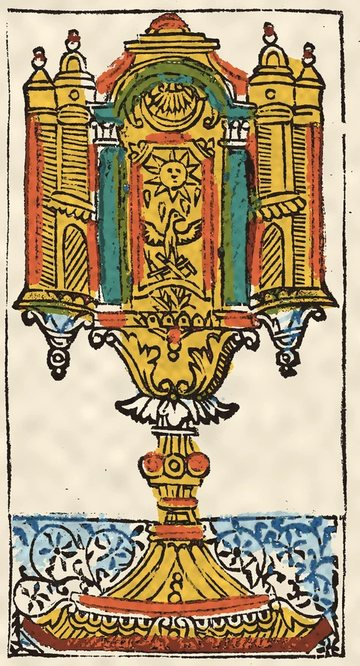
Copas
lo que se sienteLos afectos, los vínculos, las emociones.
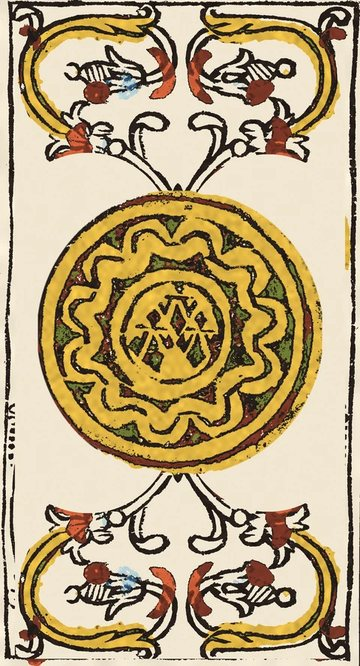
Oros
lo que se tieneEl dinero, el trabajo, el cuerpo, lo material.
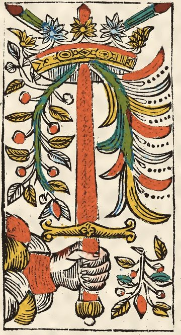
Espadas
lo que se piensaEl pensamiento, la palabra, las decisiones y los conflictos.
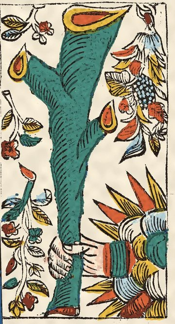
Bastos
lo que se deseaEl deseo, la energía, la acción, lo que se crea.
Los números y las figuras
En los menores, el número dice en qué punto está esa energía: el As es el comienzo y el Diez, el cierre de un ciclo. Las figuras pueden mostrar personas o actitudes.
AsDiez
Los dos mazos más populares
Hay muchísimos mazos, pero casi todos vienen de dos grandes tradiciones. Tienen la misma estructura: 22 mayores, 56 menores y cuatro palos.
Tarot de Marsella
el más antiguoViene de los naipes que se pintaban en Italia en el siglo XV. Su forma se fijó en Francia entre los siglos XVII y XVIII, y toma el nombre de Marsella, una ciudad donde se fabricaban muchas cartas. Son grabados en madera con pocos colores.
Los numerales no tienen escenas: se leen por el palo, el número y cómo están dibujados.
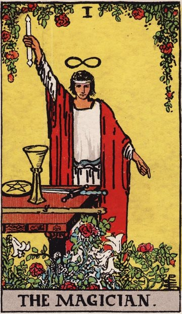
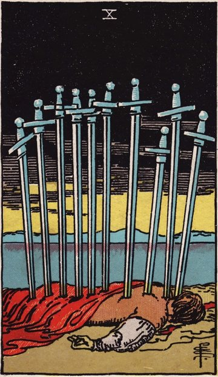
Tarot Rider
el de las escenasSe publicó en Londres en 1909. Lo ideó Arthur Edward Waite y lo dibujó Pamela Colman Smith; Rider era la editorial. También se lo llama Rider-Waite o Rider-Waite-Smith.
Su gran novedad: todas las cartas tienen una escena, también los numerales, y eso ayuda a leerlas por la imagen.
Otras diferencias: en el Rider, los Oros se llaman Pentáculos y los Bastos, Varas. La Fuerza y la Justicia cambian de lugar: en el Marsella la Justicia es la VIII y la Fuerza la XI, y en el Rider es al revés. En la Ronda caben todos los mazos.